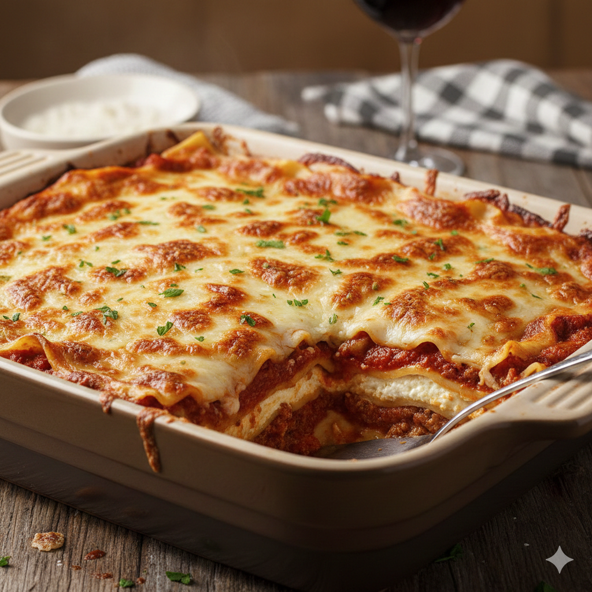

Lasagna
Home

Description
This classic beef lasagna is a hearty, comfort-food staple featuring multiple layers of savory flavors and rich textures. It starts with a thick, slow-simmered Bolognese sauce made with ground beef, aromatics, and vine-ripened tomatoes. These layers are separated by tender pasta sheets and a creamy, herb-infused ricotta filling that adds a velvety contrast to the acidity of the tomato.
The dish is finished with a generous topping of melted mozzarella and sharp Parmesan cheese, baked until the edges are crispy and the center is bubbling. When sliced, the lasagna reveals beautiful, distinct layers of red sauce, white cheese, and golden pasta, making it as visually impressive as it is delicious.
Ingredients
- Lasagna noodles (regular or no-boil)
- 1 lb ground beef or Italian sausage
- 1 small onion, diced
- 3 cloves garlic, minced
- 28 oz crushed tomatoes
- 2 tbsp tomato paste
- 15 oz ricotta cheese
- 1 large egg
- 1/4 cup fresh parsley, chopped
- 2 cups shredded mozzarella cheese
- 1/2 cup grated Parmesan cheese
- 1 tsp dried oregano
- 1 tsp dried basil
- Salt and black pepper to taste
Steps
- Prepare the Sauce: In a large skillet, brown the ground beef with the onion and garlic over medium heat. Drain excess fat, then stir in the crushed tomatoes, tomato paste, oregano, and basil. Simmer for 20–30 minutes.
- Mix the Cheese Filling: In a medium bowl, combine the ricotta cheese, egg, chopped parsley, and a pinch of salt and pepper. Stir until smooth and well combined.
- Layer the Lasagna: Spread a thin layer of meat sauce in the bottom of a 9x13 inch baking dish. Place a layer of noodles over the sauce, followed by a layer of the ricotta mixture, more meat sauce, and a sprinkle of mozzarella.
- Repeat Layers: Continue layering noodles, ricotta, sauce, and mozzarella until all ingredients are used, ending with a final thick layer of mozzarella and Parmesan on top.
- Bake: Cover the dish with foil (tenting it so it doesn't touch the cheese) and bake at 190°C (375°F) for 25 minutes. Remove the foil and bake for another 15 minutes until the cheese is golden and bubbly.
- Rest and Serve: Let the lasagna sit for at least 15 minutes before slicing. This allows the layers to set so they stay intact when served.